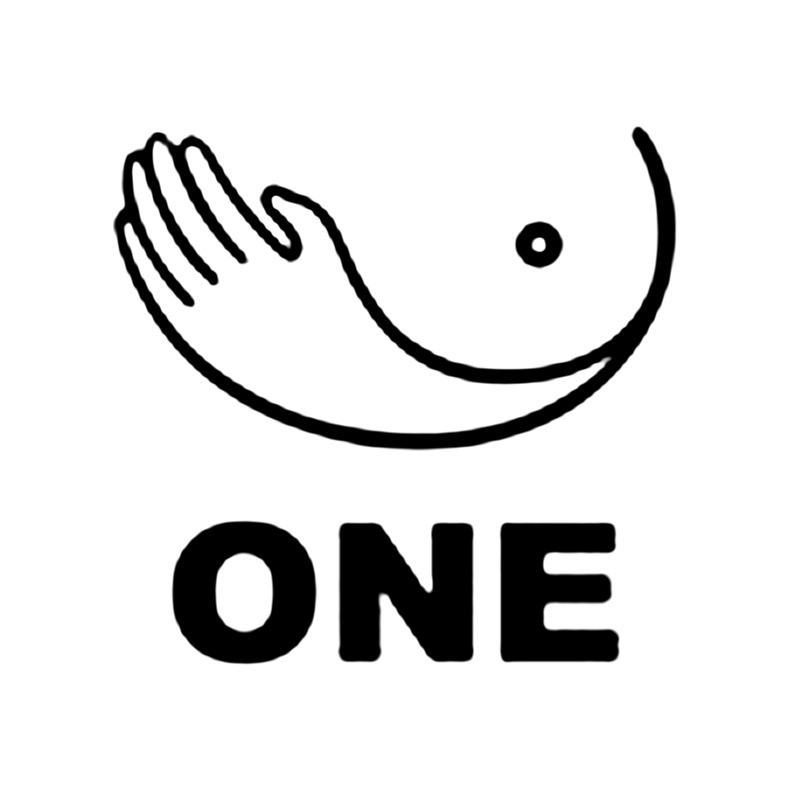

One
ONE·一个 的第三方原生 iOS 客户端
iOS 16+ · iPhone / iPad · 未签名 IPA
安装
用 LCSign 导入 下载 IPA（自己签名）安装包是未签名的，需要自签：推荐 LCSign，也可以用 SideStore / 自己的证书。点「用 LCSign 导入」前请先装好 LCSign。
iOS 其他安装方式
正式版

点开后选你用的商店（AltStore / SideStore / Feather / LiveContainer 等），添加订阅源。之后在商店里就能安装 One，有新版时商店里会显示「更新」。
https://raw.githubusercontent.com/ios151/One-releases/main/altsource.json
版本记录
- 读取中…